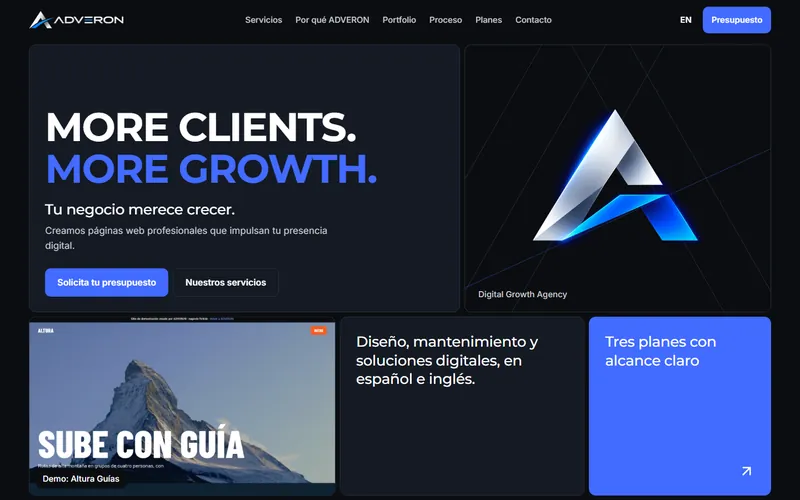
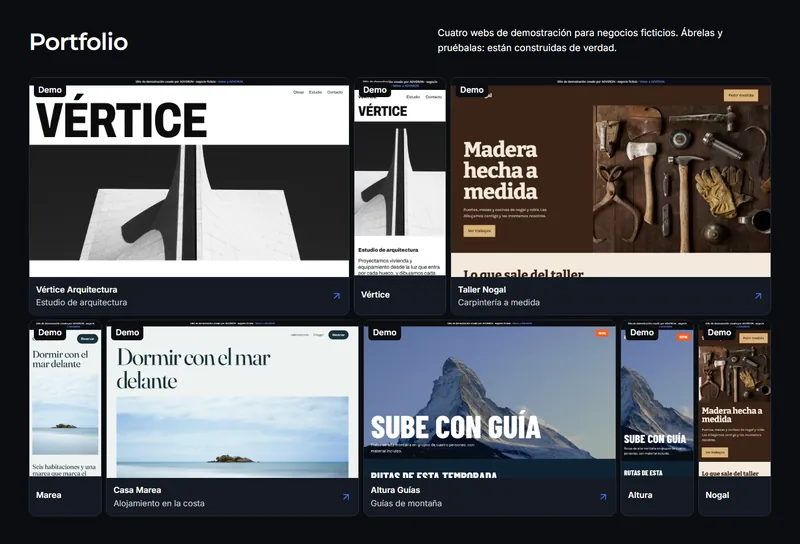
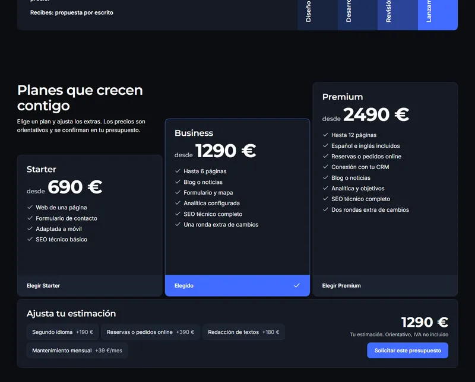

ADVERON
El proyecto empresarial que estoy construyendo junto a Nela: diseño web, mantenimiento y soluciones digitales para negocios. Está en sus inicios, y esta página lo cuenta tal como es.
- Tipo
- Proyecto empresarial propio
- Equipo
- Nela y yo
- Tecnología de la web
- HTML, CSS, JavaScript
- Estado
- En desarrollo · web publicada

Qué es
ADVERON parte de una idea sencilla: muchos negocios necesitan una web clara, que funcione en el móvil y que alguien mantenga después, explicada sin tecnicismos y con un precio que se entienda desde el principio.
Es un proyecto compartido. Lo construimos y gestionamos entre Nela y yo: servicios, web, propuestas y trato con quien se interesa.
Qué incluye la web
- Español e inglésVersión completa en inglés con selector de idioma en la cabecera.
- Calculadora de presupuesto orientativoTres planes y extras (segundo idioma, reservas, textos, mantenimiento) que actualizan la estimación al momento, con IVA no incluido y precio final confirmado por escrito.
- Servicios y proceso en cinco fasesDescubrimiento, diseño, desarrollo, revisión y lanzamiento, con lo que recibe el cliente al final de cada una.
- Portfolio de demostraciónCuatro webs construidas de verdad para negocios ficticios, enlazadas y navegables.
- Contacto y páginas legalesFormulario que prepara el email en la aplicación de correo del visitante, con aceptación de la política de privacidad, aviso legal y política de cookies.
Las demos no son clientes
Vértice Arquitectura, Taller Nogal, Casa Marea y Altura Guías son negocios ficticios. Son demostraciones para enseñar cómo trabajamos, y la propia web de ADVERON las marca como «Demo» y lo explica en su portfolio.

Planes y presupuesto

Lo que estoy aprendiendo
- Tratar con clientesEscuchar el negocio antes de proponer nada, igual que en atención al cliente.
- Diseñar serviciosConvertir «hacer webs» en planes con alcance claro y precio comprensible.
- Organizar proyectosFases con entregables y aprobación antes de avanzar.
- Crear propuestasDemos funcionales para enseñar en lugar de prometer.
- Gestionar un negocioPresupuestos, textos legales, dos idiomas y reparto del trabajo entre dos personas.